Территория Стрелки
Вращайте мышью или пальцем. Нажмите на метку для перехода к объекту.
Глава I · 1917–1932
Конец ярмарки
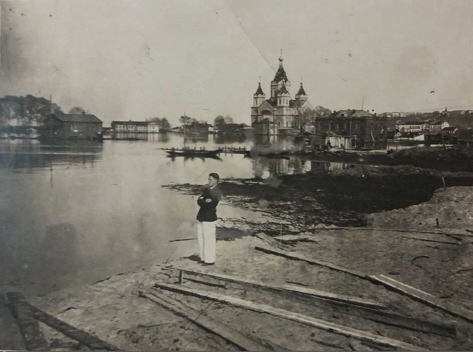
Октябрьская революция не сразу уничтожила ярмарку. Первые годы новая власть была слишком занята Гражданской войной, а с весны 1922 года ярмарочные здания на Стрелке и вовсе стали местом дислокации частей формирующейся Красной Армии. Курс на новую экономическую политику на короткое время вернул торговлю: Нижегородская ярмарка возобновила работу и за семь лет нарастила обороты почти в десять раз, с 31 до 300 миллионов рублей. В 1928 году на ней были представлены товары более двух с половиной тысяч фирм, включая представителей Персии, Китая, Афганистана, Турции, Монголии и Ирака. Однако «карман России» был обречен.
6 февраля 1930 года вышло правительственное постановление, навсегда изменившее судьбу Стрелки. Формулировка была безапелляционной: «Нижегородскую ярмарку упразднить и Наркомторгу СССР в месячный срок ликвидировать ярмарочный комитет». Закрытие ярмарки стало одной из последних акций по уничтожению НЭПа. Столетняя торговая традиция была признана «социально враждебным явлением» и прекратила существование. Вслед за ярмаркой город лишился и своего исторического имени: в 1932 году Нижний Новгород был переименован в Горький.
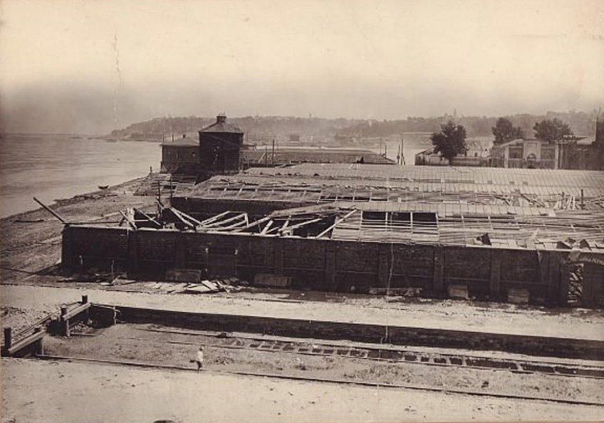
Судьба ярмарочных построек оказалась трагической. Многочисленные торговые ряды, пристани, складские корпуса были либо разрушены, либо приспособлены под жилье. К середине 1930-х годов на территории бывшей ярмарки образовался район трущоб, где в бывших лавках ютились семьи рабочих. От грандиозного архитектурного ансамбля, включавшего сотни каменных и деревянных строений, сохранилось лишь несколько зданий: Главный ярмарочный дом, Спасский Староярмарочный собор и собор Александра Невского.
Отдельной страницей этого периода стала судьба Новоярмарочного собора Александра Невского, возведенного в 1868-1881 годах по проекту архитектора Л.В. Даля. К моменту постройки он являлся третьим по высоте собором в России и служил архитектурной доминантой всей территории. В 1929 году храм был закрыт для богослужений. Колокола, некоторые весом в несколько тонн, были сняты и отправлены на переплавку для нужд индустриализации. Кресты демонтированы в 1930 году. Настенные росписи и иконостас были утрачены: часть закрашена, часть осыпалась от сырости. Здание поочередно использовалось как склад зерна, военные помещения и даже жилье для портовых рабочих. В конце 1930-х годов власти всерьез обсуждали полный снос собора и возведение на его месте гигантского памятника-маяка, но начавшаяся война не позволила реализовать этот замысел.
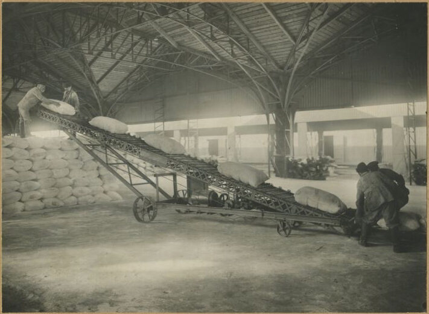
Не менее драматичной оказалась история ярмарочных пакгаузов. Уникальные металлические каркасы, изготовленные на Санкт-Петербургском металлическом заводе по проекту инженеров Г.Е. Паукера и И.А. Вышнеградского для Главного здания XV Всероссийской выставки 1882 года в Москве, были перевезены в Нижний Новгород для XVI Всероссийской выставки 1896 года. После выставки городской голова Д.В. Сироткин выкупил конструкции, их обложили кирпичом, накрыли шифером и приспособили под товарные склады. С приходом советской власти пакгаузы вошли в состав формирующейся портовой инфраструктуры, и ажурное «стальное кружево» внутри оказалось замуровано за невзрачными стенами ангаров. О существовании уникальных конструкций не будет известно более ста лет.
Среди ярмарочных построек, переживших революцию, оказалась и фильтровальная станция, построенная в 1909 году архитектором Мичуриным. Это элегантное двухэтажное здание из красного кирпича в стиле модерн решало в свое время острую проблему эпидемий холеры на многолюдной ярмарке. В 1911 году именно здесь впервые в России было применено хлорирование питьевой воды, что стало прорывом в области санитарной безопасности. После закрытия ярмарки станция некоторое время обслуживала «красную ярмарку» периода НЭПа, а затем была включена в портовое хозяйство. Здание располагается по координатам 56.3340°N, 43.9720°E, на территории Сибирских пристаней.
Объекты на карте
Глава II · 1932–1941
Рождение порта
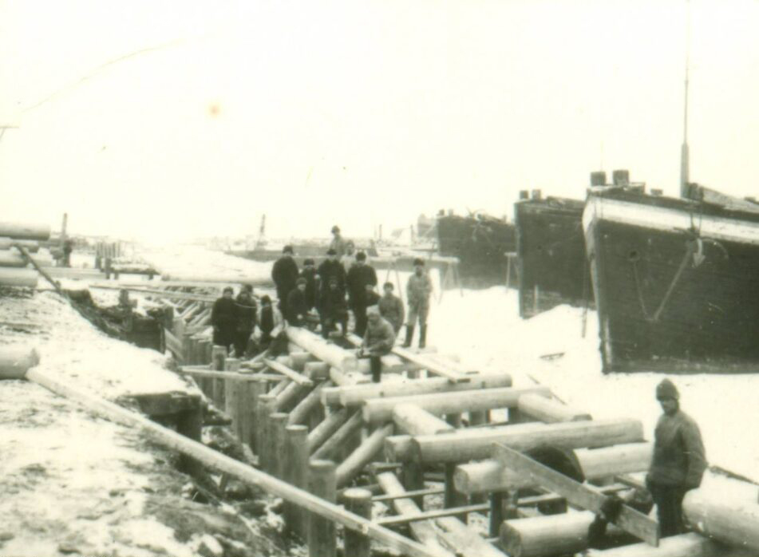
Приказом Народного комиссариата водного транспорта No94 от 7 марта 1932 года в городе Горьком был образован Нижегородский речной порт. В ноябре того же года, после переименования города, он получил название Горьковский речной порт. Так началась новая глава в истории Стрелки, которая растянется на шесть с лишним десятилетий. Территория, где прежде шумела ярмарочная торговля, превратилась в промышленную площадку, работающую круглый год.
Принципы развития порта были разработаны в 1931 году Государственным институтом проектирования и изысканий на водном транспорте (Гипроводтранс). Проект предусматривал создание современной причальной инфраструктуры, способной принимать суда большого водоизмещения. В 1934 году на Стрелке началось строительство первых на всей Волге благоустроенных причалов с вертикальной причальной стенкой из бетонного монолита на свайном основании. До этого суда пришвартовывались к деревянным дебаркадерам и баржам, как во времена ярмарки. Новые причалы стали инженерным прорывом: к 1957 году порт располагал уже 18 причалами, из которых четыре крупных имели железобетонные стенки общей протяженностью около 450 погонных метров.
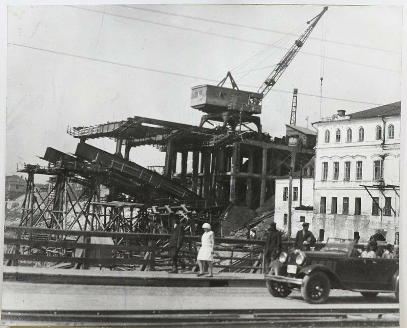
Порт был представлен тремя грузовыми районами. Центральный район располагался непосредственно на Стрелке и специализировался на штучных и тарно-упаковочных грузах. Волжский район тянулся вдоль правого берега Волги и обслуживал навалочные грузы: песок, щебень, уголь. Окский район находился со стороны Оки и работал преимущественно с лесными грузами. Параллельно с развитием порта в 1930-1933 годах через Оку был переброшен Канавинский (Окский) мост, ставший первой постоянной переправой между нагорной и заречной частями города. До этого переправа осуществлялась через наплавные мосты, которые разводились для прохода судов. Новый мост длиной 795 метров связал промышленное левобережье с центром и железнодорожным узлом, что существенно упростило транспортную логистику порта.
Ярмарочная фильтровальная станция и бывшие пакгаузы были включены в хозяйство порта как вспомогательные постройки. Механизация погрузки и выгрузки набирала темпы, хотя в тридцатые годы значительная часть работ все еще выполнялась вручную. На участке Сибирских пристаней начали внедрять передвижные ленточные конвейеры и первые грузоподъемные механизмы. Никто из работников порта не подозревал, что внутри невзрачных складских ангаров скрыты уникальные чугунные колонны и стальные арки, изготовленные для Всероссийских выставок.
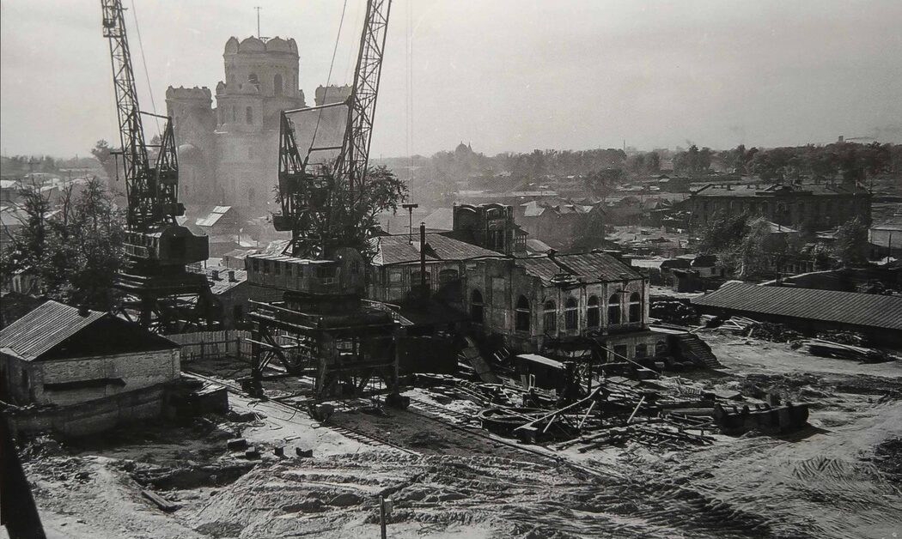
Одновременно с причалами на Стрелке появилась плавучая ремонтная мастерская — крупный понтон с деревянной надстройкой, в которой располагались слесарный, кузнечный и столярный цеха. Надпись «Мастерские Нижгорпорта» на фасаде здания указывает на первые месяцы работы порта, когда город еще не был переименован в Горький. Мастерская обеспечивала текущий ремонт буксиров, барж и катеров без необходимости отправлять суда на дальние судоремонтные заводы. К этому времени территория Стрелки окончательно утратила черты торгового центра и приобрела облик промышленной зоны. Доступ для посторонних был ограничен.
К началу Великой Отечественной войны грузооборот Горьковского водного узла значительно вырос по сравнению с дореволюционным уровнем. Порт прочно занял позицию одного из ключевых транспортных узлов Волжского бассейна, обеспечивая перевалку грузов между речным, железнодорожным и автомобильным транспортом. Стрелка, некогда кипевшая ярмарочной торговлей, теперь гудела гудками буксиров и грохотом подъемных механизмов.
Объекты на карте
Глава III · 1941–1945
Стрелка на войне
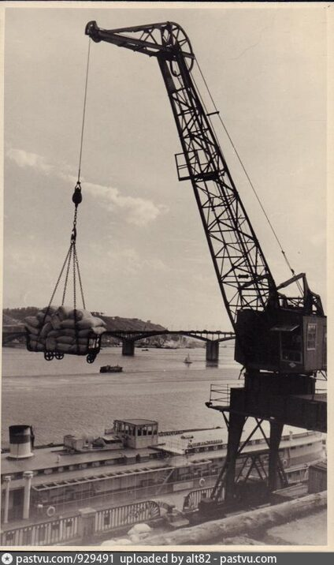
Великая Отечественная война превратила Горьковский речной порт в объект стратегического значения. Город, расположенный в глубоком тылу, стал одним из главных арсеналов Советского Союза. На заводе «Красное Сормово» строились танки Т-34, на авиационном заводе имени Орджоникидзе выпускались истребители, Горьковский автомобильный завод производил грузовики, бронеавтомобили и легкие танки. Все эти предприятия нуждались в бесперебойном снабжении сырьем и материалами, значительная часть которых поступала речным транспортом через Стрелку. Порт работал в авральном режиме: суда разгружались круглосуточно, а на причалах трудились не только докеры, но и мобилизованные горожане, подростки, женщины.
Немецкое командование прекрасно понимало значение Горького для советской военной промышленности. За годы войны город подвергся 43 авианалетам, в ходе которых было сброшено более 33 тысяч зажигательных и свыше 1600 фугасных бомб. Основной удар пришелся на Автозаводский район, однако и территория Стрелки находилась в зоне повышенной опасности. Рядом с портом проходил Канавинский мост через Оку, единственная переправа, связывавшая нагорную и заречную части города. Его уничтожение парализовало бы снабжение всех оборонных предприятий левобережья. По воспоминаниям ветеранов, на крыше собора Александра Невского была установлена зенитная пулеметная точка, прикрывавшая подходы к мосту и территорию порта. Благодаря системе противовоздушной обороны, включавшей зенитные батареи, прожекторы и аэростаты заграждения, ни одна бомба не была сброшена непосредственно на Стрелку и Канавинский мост.
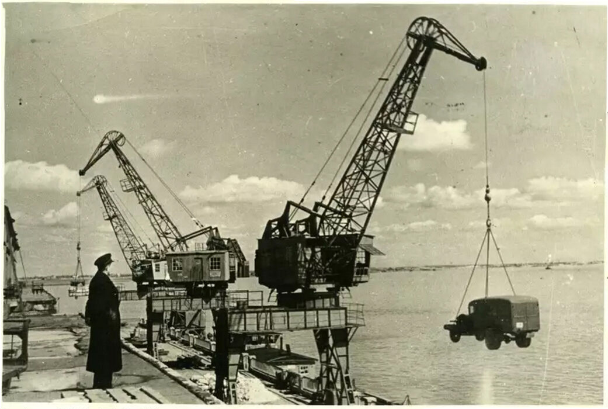
Бывшие ярмарочные пакгаузы, ставшие портовыми складами, в эти годы играли роль перевалочных баз для стратегических грузов. Через них проходили тонны металла для сормовских танков, каучука для автозаводских шин, продовольствия для снабжения населения и армии. Фильтровальная станция 1909 года, давно утратившая первоначальное назначение, использовалась как подсобное помещение портовой инфраструктуры. В здании речного порта круглосуточно работали диспетчерские службы, координировавшие движение судов по Волге и Оке. Работа порта не прекращалась ни на один день, даже во время бомбардировок. Горьковские портовики внесли весомый вклад в победу, обеспечивая непрерывный транспортный поток между фронтом и тылом.
За годы войны из 22 миллионов 600 тысяч рублей, ассигнованных государством на восстановление портов и пристаней Волги, более двух третей (15 миллионов) было выделено именно Горьковскому порту. Это красноречиво говорит о его значении в транспортной системе страны. Война закончилась, но порт продолжал работать в напряженном режиме: предстояло восстановить разрушенную инфраструктуру, принять возвращающиеся эвакуированные грузы и перестроиться на мирные рельсы. Стрелка, пережившая бомбардировки Горького, вступала в новую эпоху, которая станет временем расцвета речного порта.
Глава IV · 1946–1991
Расцвет и закат
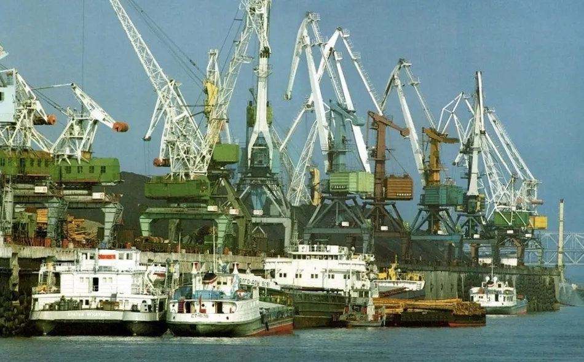
Послевоенные десятилетия стали золотым веком Горьковского речного порта. Выделенные государством средства пошли на масштабное техническое перевооружение: порт получил четыре портальных крана, восемь плавучих кранов, десятки электропогрузчиков и ленточных транспортеров. К 1957 году в его распоряжении находилось 228 перегрузочных машин и механизмов, включая 41 кран, 56 ленточных транспортеров и 65 автоэлектрокаров. Грузооборот Горьковского водного узла за период с 1925 по 1956 год вырос с полутора до пяти миллионов тонн. Порт прочно удерживал звание одного из мощнейших речных портов страны и не уступал эту позицию вплоть до начала 1990-х годов.
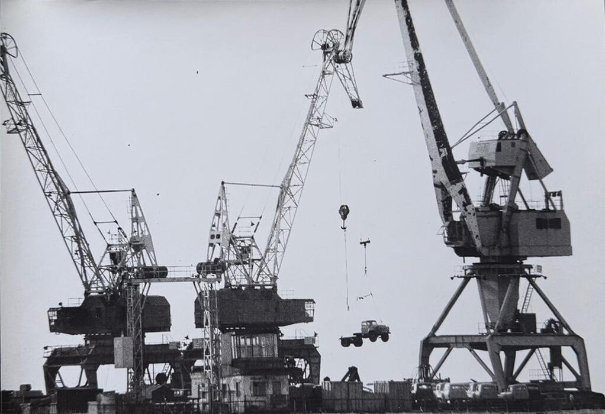
Именно в эти годы на Стрелке появились портальные краны, силуэты которых станут визитной карточкой территории на долгие десятилетия. Венгерские краны Ganz, производства будапештского судо-краностроительного завода, начали поставляться в советские порты с конца 1960-х годов. Модель 16/27,5 тонн стала рабочей лошадкой порта: ее грейфер захватывал мокрый речной песок из трюмов барж, а крюковая подвеска поднимала контейнеры и штучные грузы. Из Германской Демократической Республики по линии Совета Экономической Взаимопомощи (СЭВ) поставлялись краны TAKRAF производства завода VEB Kranbau Eberswalde. Модель «Альбатрос» 16/32 отличалась высокой точностью позиционирования груза и применялась главным образом для перевалки минерально-строительных грузов. «Кондор» 16/32/40, самый мощный кран на Стрелке, с грузоподъемностью до 40 тонн и спредером для контейнеров, появился в эпоху контейнеризации и стал ключевым звеном международных транспортных коридоров. Малый кран Ganz 5/6 тонн обеспечивал бункеровку судов углем и погрузку мелких партий. В 1967 году в порту был установлен кран «Деррик» грузоподъемностью 100 тонн. Нижегородский порт также имел 9 русловых месторождений песка в акватории Волги, от Васильсурска до Нижнего Новгорода, и на Оке у Дуденева.
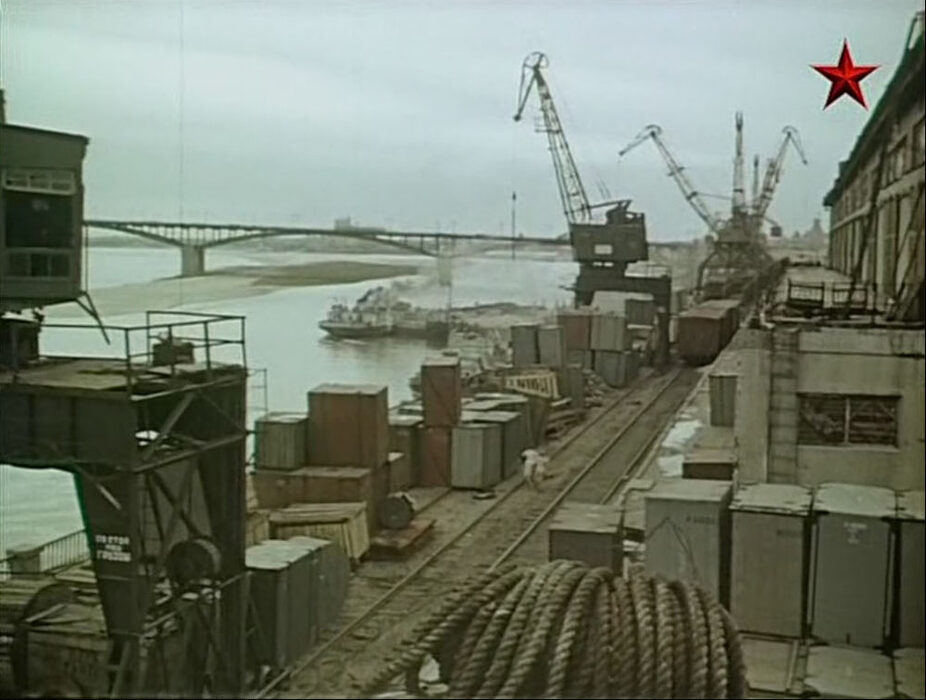
В 1956 году на территории порта проходили съемки художественного фильма «Екатерина Воронина» по одноименному роману Анатолия Рыбакова. Картина рассказывала о молодой женщине, инженере и начальнике участка речного порта, и была снята непосредственно в Центральном грузовом районе Горьковского порта. Для тысяч портовых рабочих и жителей левобережья это стало настоящим событием. Фильм запечатлел повседневную жизнь порта 1950-х: причалы, краны, баржи, труд докеров, белые теплоходы на рейде. Из порта в те годы отправлялись пассажирские рейсы на Москву, Астрахань, Пермь, Ростов-на-Дону, что делало Стрелку не только грузовой площадкой, но и отправной точкой для путешествий по Волге.

Период холодной войны принес на Стрелку особый режим секретности. В 1970-1980-е годы на территории была построена сеть подземных противоядерных бункеров, предназначенных для защиты личного состава и командных пунктов на случай ядерного удара. Территория порта была полностью закрыта для свободного посещения: обычный горожанин не мог попасть на мыс, который его деды знали как ярмарочную площадь. За заборами и проходными скрывались не только краны и склады, но и уникальные конструкции XIX века, о существовании которых не подозревали даже работники порта. Электроснабжение всей этой инфраструктуры обеспечивала трансформаторная подстанция ТП-РП 2820, питавшая портальные краны, освещение причалов, транспортеры и складское хозяйство в круглосуточном режиме.
ㅤ
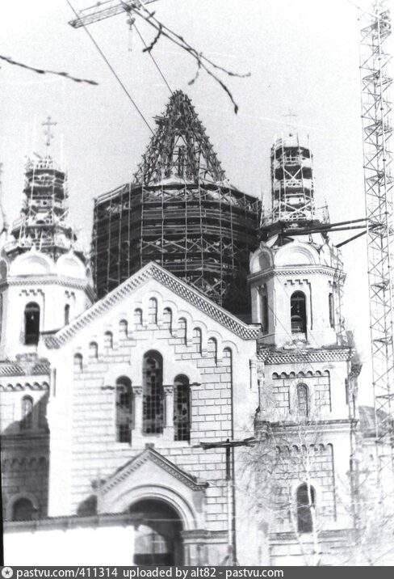
В 1983 году произошло знаковое событие: началась научная реставрация собора Александра Невского по проекту архитекторов Ольги Сундиевой и Ирины Агафоновой. Многое приходилось восстанавливать по дореволюционным фотографиям Максима Дмитриева, запечатлевшего облик ярмарки и собора в конце XIX века. Собор, полвека служивший складом, начал возвращать свой первоначальный облик. В 1990 году Горькому вернули историческое название Нижний Новгород, а в соборе возобновились богослужения. Это символическое событие совпало с началом заката речного порта: в условиях рыночной экономики грузооборот стал стремительно падать, предприятие теряло рентабельность. Начиналась новая эпоха, в которой территории Стрелки предстояло пережить еще одну радикальную трансформацию, сопоставимую по масштабу с той, что произошла в 1930-е годы.
Советский период в истории Стрелки завершился. За семь десятилетий территория прошла путь от ярмарочных трущоб через становление крупнейшего речного порта, через военные испытания и послевоенный расцвет к постепенному угасанию в условиях новой реальности. Портальные краны, ставшие символом советской Стрелки, простояли на причалах до 2017 года, когда были демонтированы для строительства стадиона к Чемпионату мира по футболу. А ажурные конструкции пакгаузов, замурованные в 1920-е и случайно обнаруженные в 2015 году, стали одним из главных открытий в процессе преобразования территории к 800-летию города. Из восьми павильонов Всероссийских выставок уцелели лишь два, и сегодня они служат выставочным и концертным залами, напоминая о сложной и многослойной истории этого уникального места.
Объекты на карте